Led by Professor Unsang Park, CVIP Lab studies methods for recognizing people and objects in images and reconstructing 3D structures from multiple views.
CVIP Lab, led by Professor Unsang Park, conducts research in computer vision, pattern recognition, and biometrics at Sogang University. The following areas follow the order used in the laboratory’s official introduction.
01
Computer Vision
Computer vision covers the acquisition, analysis, and processing of visual data to understand and reconstruct three-dimensional information. The field seeks to develop computational methods that perform visual tasks using images and camera systems.
02
Pattern Recognition
Pattern recognition uses statistical and machine-learning methods to identify meaningful structures in data. Our research focuses on understanding the content of images and videos by analyzing visual patterns and their characteristics.
03
Biometrics
Biometrics studies methods for identifying or verifying individuals using physical and behavioral characteristics. Examples include facial features, fingerprints, and iris patterns.
Select a linked presentation title to open the original Google Drive, Google Slides, or SharePoint material. Titles without links have no presentation URL on the archived source page.
Research projects listed in the same order as the original CVIP Lab research page. Figures for completed projects are reproduced from the lab’s archived research-page PDF.
Ongoing Research
Speech-driven 3D animation
3D Oral Articulation Visualization for Dysarthric Speech
Estimates tongue, lip, and jaw movements from speech to visualize the 3D oral structures involved in pronunciation.
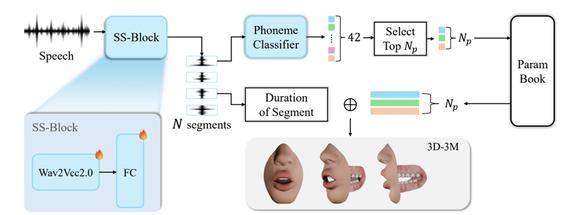
3D-3M architecture for generating 3D tongue, lip, and jaw motion from speech. Sogang University, THE COMPUTING, Vol. 5, p. 23.View research details ↗Multimodal data augmentation
Multimodal Data Augmentation
Generates videos and text descriptions of hard-to-observe events such as fires, falls, and floods to support hazard recognition.
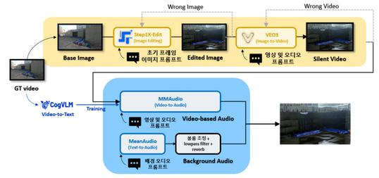
Pipeline for generating hazardous-event video from background images and prompts, followed by audio generation. THE COMPUTING, Vol. 5, p. 24.View research details ↗3D reconstruction
Real-Time Zero-Shot 3D Reconstruction
Reconstructs a 3D object from smartphone video by selecting views of the object captured from different angles.
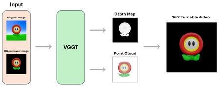
Process for estimating depth maps and point clouds from the original and background-removed images and synthesizing a 360° view. THE COMPUTING, Vol. 5, p. 24.View research details ↗Image restoration
Single Image Deraining
Investigates a lightweight network that analyzes multi-scale image features to remove rain streaks from a single photograph.
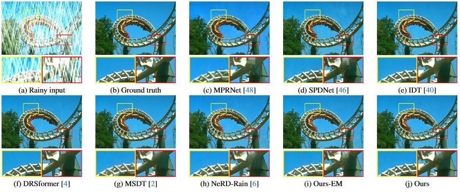
Comparison of deraining results on the same scene. The final column shows the research team’s results (Seungho Eum, RARo).View research details ↗
Completed Research
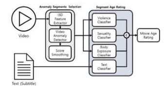
Harmful Media Assessment Demo
Harmful Media Detection System Demo
Video, audio, and text information are used to evaluate uploaded videos and present an overall rating.
View details ↗
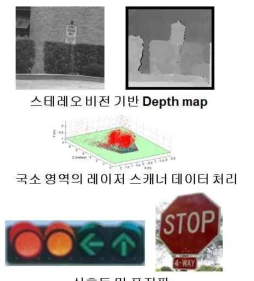
Vision for Autonomous Vehicles
Vision System for Autonomous Vehicles
Image-based scene understanding, depth estimation, point-cloud processing, and traffic-signal recognition for vehicle navigation.
View details ↗
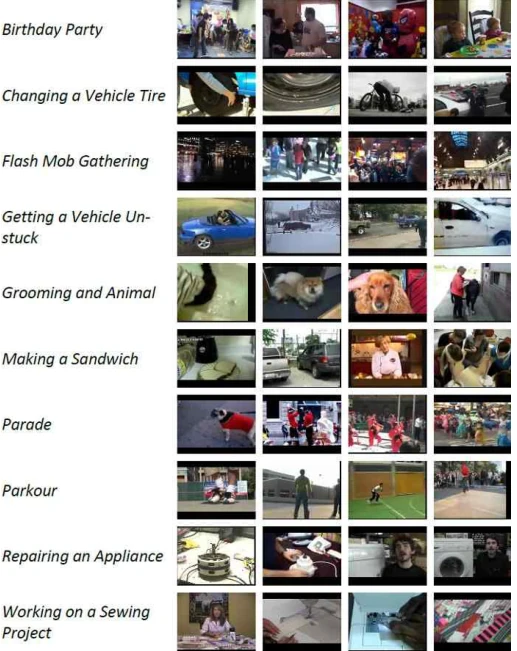
Video Event Detection
Video Event Detection
Video event recognition using visual appearance, motion, audio, and audiovisual co-occurrence features.
View details ↗
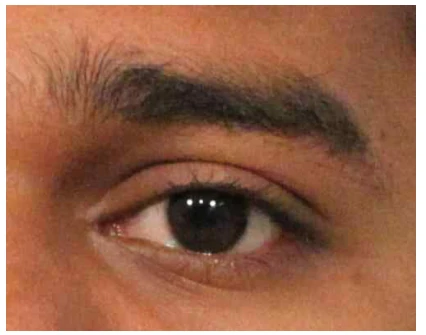
Periocular Biometrics
User Identification Using Periocular Biometrics
Identification using visual features around the eye, including texture and local feature information.
View details ↗
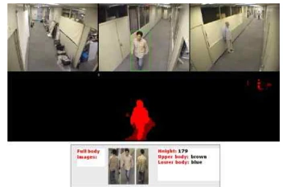
Surveillance Video Search
Surveillance Camera System for Automated Suspect Search
Search for people in surveillance video using appearance-based features and human-assisted monitoring.
View details ↗
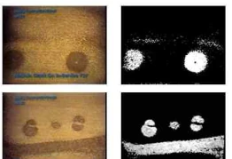
Non-destructive Evaluation
Development of a real-time image processing system for non-destructive evaluation (NDE)
Real-time processing of magneto-optic imaging data for inspection, defect detection, and classification.
View details ↗
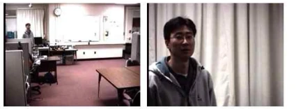
Long-distance Face Recognition
Face recognition at a distance using PTZ camera
Remote face recognition and tracking using pan–tilt–zoom cameras and image processing.
View details ↗
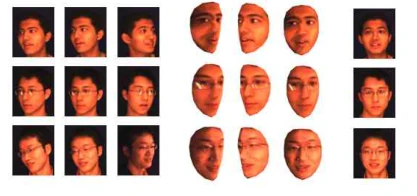
3D Face Reconstruction
3D face reconstruction from video
Reconstruction of a three-dimensional face from multiple video frames to support pose variation in face recognition.
View details ↗
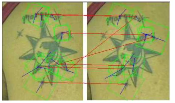
Object Recognition & Image Retrieval
Object recognition and Image retrieval
Scale-invariant local features and image matching for object recognition and image retrieval.
View details ↗
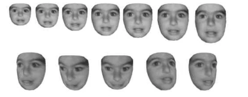
Facial Aging Modeling
Aging modeling for face recognition
Modeling age-related facial shape and texture changes to support face recognition across ages.
View details ↗
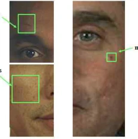
Facial Mark Recognition
Facial mark based face recognition
Facial marks such as scars, moles, and freckles are used as distinctive features for facial matching.
View details ↗
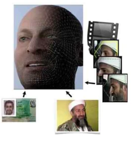
Janus (IARPA)
Janus: U.S. IARPA Research Program
Face recognition research under the Janus program, as described on the original CVIP Lab research page.
View details ↗
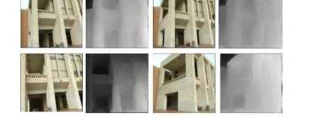
Depth Reconstruction
Deep Learning-Based 3D Depth Reconstruction
Deep-learning-based techniques for reconstructing 3D depth information.
View details ↗
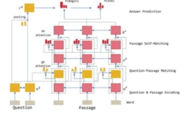
Vision for Autonomous Vehicles
Vision System for Autonomous Vehicles
Vision processing for autonomous driving and recognition of relevant surroundings.
View details ↗
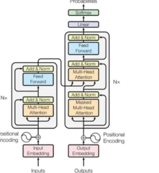
Financial Investment Q&A
Deep Learning-Based Financial Investment Question Answering
A deep-learning-based question-answering system for financial investment.
View details ↗
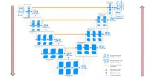
Deep-learning-based Mold Correction
Deep Learning-Based Mold Correction
Modeling and correction of mold shape changes using learned deformation estimates.
View details ↗
Source: Sogang University CVIP Lab, “Research Projects” (archived PDF of the official research page, 23 Nov 2026). No additional claims about project outcomes are implied.
Publications
English translations are provided for publication titles originally published in Korean. Official titles and author spellings should be verified against the published records.
ACM International Conference on Information and Knowledge Management (CIKM) · Human-Centric AI: From Explainability and Trustworthiness to Actionable Ethics
R911, Ricci Hall, Sogang University 35 Baekbeom-ro, Mapo-gu, Seoul 04107, Republic of Korea Google Maps ↗
Student Lab
R913, Ricci Hall, Sogang University 35 Baekbeom-ro, Mapo-gu, Seoul 04107, Republic of Korea Google Maps ↗
Prospective Students
Prospective graduate students are invited to email their CV and academic transcript to unsangpark@sogang.ac.kr.
Map
Research challenge
Modeling the motion of the tongue, lips, and jaw is important for speech therapy, pronunciation education, and speech-driven animation. Existing approaches can struggle to transfer across speakers, which makes it difficult to represent the variety of articulatory motion found in real speech.
Data and methodology
The research introduces a dataset associating phonemes with three-dimensional parameters for the tongue, lips, and jaw. The goal is to support anatomically meaningful speech-driven oral animation rather than relying solely on external facial motion.
Speaker adaptation and applications
Audio-derived features are combined with speaker-specific adaptation to account for differences such as accent and intonation. The work is intended as a foundation for personalized visualizations in therapeutic, educational, and creative settings.
Research goal
Hazardous events such as fires, falls, and floods can be difficult to capture in large quantities as real-world training data. The project investigates how multimodal data augmentation can help build intelligent safety monitoring and risk-response systems.
Generation pipeline
Generative models, including diffusion-based approaches and GANs, are used to synthesize video scenes depicting hazards. A Transformer-based approach builds corresponding video-and-text data, which support training a generative model.
Downstream use
The generated video data and accompanying text are used to augment the training data available to event-detection models. The emphasis is on providing additional multimodal examples for recognizing uncommon or dangerous situations.
Research goal
The project explores three-dimensional reconstruction for digital commerce using videos recorded with ordinary mobile devices. It aims to make 3D product representation accessible without a specialized capture setup.
Processing workflow
A user uploads a mobile video to a server. The system examines views captured from four key directions, reconstructs the object in 3D, and maintains its characteristic visual information.
Visualization and intended use
A rotating-view MP4 visualization can be generated from the reconstructed model. The proposed workflow is intended to help small merchants organize product information and present items through online commerce channels.
Research challenge
Removing rain streaks from a single image is useful for downstream vision tasks, but deraining networks can be computationally expensive and require substantial memory.
Method
RARo is a scale-aware convolutional network designed to combine efficient computation with image restoration. It uses gradient extraction and attention modules at multiple scales to capture rain patterns of different sizes.
Training objective and use
The approach incorporates a gradient-based loss built with Sobel filters to encourage restoration of image structures. The archived description emphasizes memory efficiency and suitability for real-time applications.
Project objective
The project presents a demonstration system that evaluates uploaded video content using more than visual frames alone.
Processing and output
The system combines visual, audio, and textual information to estimate the video’s final content rating and display supporting details to the user. The archived description does not specify the classification model or its quantitative accuracy.
Motivation
Autonomous navigation for unmanned ground vehicles requires algorithms that can be tested repeatedly. Field testing alone is difficult to separate from development of the navigation logic.
System design
The team developed a vehicle-navigation simulator connected to mapping services that support GPS-based coordinates. The simulator provides a setting in which navigation methods can be developed and assessed without relying exclusively on on-road tests.
Research focus
The archived description focuses on simulation infrastructure for autonomous navigation rather than reporting a particular perception-network architecture or benchmark score.
Problem and signals
Video event detection benefits from multiple complementary sources of evidence. The work studies low-level features representing appearance, color, motion, audio, and the co-occurrence of audio with visual events.
Semantic understanding
The approach also considers higher-level concepts such as scenes, objects, and actions. Spoken content and text visible within videos are incorporated through speech recognition and video-text recognition.
Feature integration
The different feature streams are combined in stages, with a multiple-kernel-learning framework used to merge streams that represent related kinds of information.
Why the periocular region?
The periocular area is the part of the face immediately surrounding the eye. Compared with biometric techniques that rely directly on the iris or retina, it may require less cooperation from the person being observed and can work with a greater depth of field.
Recognition method
The research evaluates whether this region can serve as an identifying biometric. Global and local characteristics are extracted using texture descriptors and point-based operators.
Matching process
The resulting features are combined into a representation for comparing and matching periocular images of individuals.
System objective
The research proposes a Visual Search Engine (ViSE) as a semi-automatic component of a surveillance system composed of networked cameras.
How it is intended to work
ViSE assists human operators who need to review large volumes of video. It searches for and tracks people on the basis of observable visual characteristics, while keeping the operator involved in the process.
Technical components
The work addresses object detection and tracking, shadow suppression, and recognition based on color information.
Inspection setting
Magneto-optic imaging is a non-destructive inspection technique used in contexts such as aircraft inspection. Large volumes of inspection data can make manual interpretation labor-intensive and subjective.
Automated inspection
The project develops an inspection pipeline for rivets in magneto-optic imagery. The described stages include filtering the image, detecting rivets, and classifying detected structures.
Real-time implementation
The algorithms are implemented on a digital signal processor (DSP) board with real-time operation in mind. The archived research page reports initial implementation results rather than a detailed quantitative evaluation.
Recognition at a distance
Facial images captured beyond approximately five meters may contain too little detail for reliable matching. The work tackles this problem by acquiring higher-resolution face images at long distances.
Camera configuration
The proposed system combines a fixed camera with a pan–tilt–zoom (PTZ) camera and uses a coaxial-concentric calibration arrangement. The setup is designed to capture faces from distances of up to about 12 meters.
Tracking and testing
A linear prediction model and camera-motion control are used to compensate for image-processing and mechanical delays. The archived page describes experiments tracking 50 individuals at distances of 6–12 meters.
Recognition problem
Faces in surveillance videos are often small, low-contrast, and viewed from non-frontal angles. These variations make direct recognition using ordinary two-dimensional face images difficult.
3D reconstruction pipeline
The method combines multiple non-frontal frames from a video to reconstruct a three-dimensional face model. It then generates a frontal face image using the reconstructed geometry.
Use for identification
The synthesized frontal view is supplied to a commercial 2D face recognition engine, with the objective of reducing the impact of pose changes on recognition.
Research setting
Object retrieval needs visual representations that remain useful when an object changes size or is photographed from different viewpoints. The project focuses on scale-space analysis and local keypoint features.
Feature extraction
Scale-invariant feature transform (SIFT) is discussed as a key method for identifying and representing local image structure across scales.
Matching improvement
The research examines the properties of scale-space operations and proposes an extension intended to improve matching accuracy in image retrieval.
Aging and recognition
Aging changes both the three-dimensional structure of a face and its surface appearance, including wrinkles. Such changes can reduce the performance of face recognition systems over time.
Modeling approach
The research proposes a 3D face-aging model to represent the changes associated with age. The modeling process adapts view-invariant 3D face models to a 2D database of aging face images.
Intended benefit
The aging model is intended to compensate for age-related variation when matching facial images taken at different ages.
Biometric motivation
Localized facial marks—such as moles, scars, and freckles—provide information that is not captured by a global face representation alone. They may be useful even for distinguishing visually similar individuals.
Detection pipeline
The described automatic method uses an active appearance model to locate major facial features, Laplacian-of-Gaussian blob detection to find candidate marks, and morphological operations for refinement.
Recognition application
Detected marks and other facial attributes are used as additional evidence for face matching and image retrieval.
Research program
The Janus project was an international face-recognition research effort sponsored by the U.S. Intelligence Advanced Research Projects Activity (IARPA). CVIP Lab participated with research partners from several institutions.
Technical objective
The program sought face recognition methods robust to changes in facial pose, illumination, and expression.
CVIP Lab contribution
The lab’s described subtopics included analysis of facial marks and appearance attributes. The archived source provides the overall program scope but does not provide detailed model architecture or evaluation figures for this card.
Research objective
The archived project is titled “Development of Deep Learning-Based 3D Depth Reconstruction.” Its stated purpose is the development of deep-learning methods for reconstructing three-dimensional depth information.
Available documentation
The original CVIP Lab page provides a representative figure and a brief one-line objective, but does not specify the datasets, network design, training procedure, or quantitative results. Additional technical claims have therefore not been added.
Archived project entry
This entry is presented under “Vision System for Autonomous Vehicles” on the original research page and is accompanied by a project figure.
Source limitation
The text printed immediately below this item in the archived source instead discusses a question-answering system for financial information. Because the title and accompanying description do not align, this card does not attribute those financial-system methods to the autonomous-vehicle project.
Related background
A separate, earlier entry with the same autonomous-navigation title describes a GPS/map-connected vehicle-navigation simulator. The original page does not establish whether this later entry is the same work.
Project goal
The project is presented as a deep-learning-based question-answering system for financial investment. A nearby description on the archived page outlines a system that moves beyond simply predicting price movement.
Intended reasoning capability
That description focuses on understanding the user’s question, reasoning about cause-and-effect relationships, and supplying an answer together with supporting grounds.
Source limitation
In the archived layout, the nearby paragraph about question answering appears under an autonomous-driving heading, while this card is followed by autonomous-navigation text. The title–description association is therefore not fully verified; no architecture or performance claims have been inferred.
Manufacturing challenge
After press forming, elastic deformation may prevent a manufactured part from matching the intended shape. Traditional corrections depend heavily on repeated trial and error and the experience of specialists.
Data-driven correction
The project investigates machine-learning methods that use records of earlier corrections to guide adjustments to molds. Its aim is to reduce repeated correction work and the amount of manual effort required.
Proposed workflow
The described steps include searching for similar past products and processes, predicting which regions require correction, indicating those regions on a 3D model, and visualizing correction amounts informed by deformation estimates.